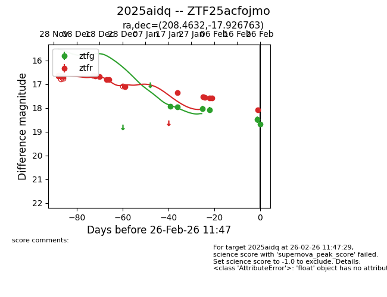
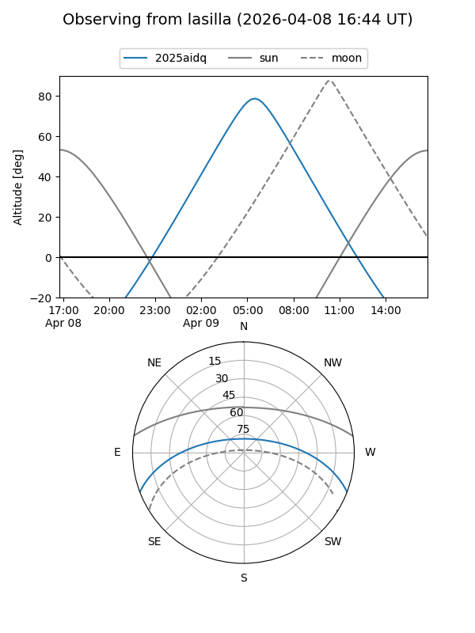
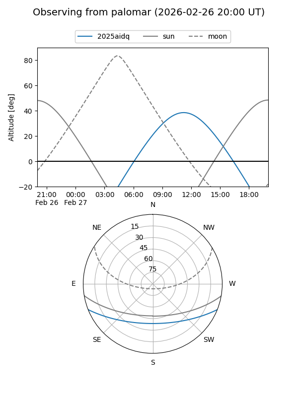
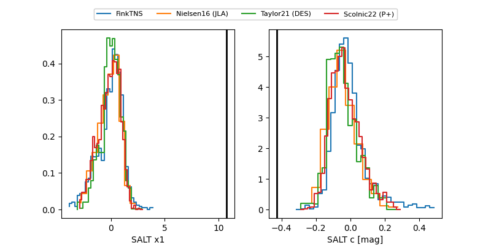

2025aidq
Target 2025aidq at 2026-01-21 13:21
Aliases and brokers:
FINK: link
Lasair: link
ALeRCE: link
TNS: link
YSE: link
alt names
ZTF25acfojmo (ztf,fink_ztf)
2025aidq (tns,yse)
Coordinates:
equatorial (ra, dec) = 208.4631,-17.92671
equatorial (HMS+DMS) = 13:53:51.15,-17:55:36.15
galactic (l, b) = (323.2334,+42.47127)
Flags:
Photometry:
last ztfg=17.94, ztfr=17.34
2 ztfg, 14 ztfr detections
Lightcurve

Visibility


Additional plots
